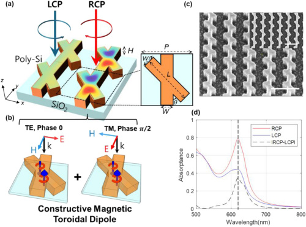
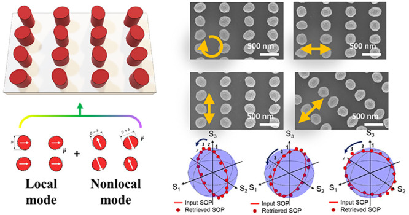
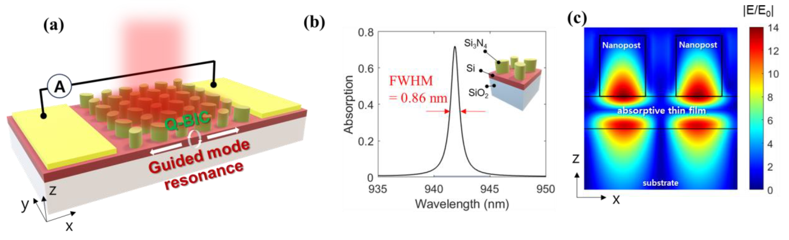

Print / Save as PDF Yu Geun Ki · 기유근 Education 2021–Present: Integrated M.S.–Ph.D. Program in Electrical Engineering, Korea University. Advisor: Prof. Soo Jin Kim. 2015–2021: B.S. in Electrical Engineering, Korea University. Research expertise Electromagnetic modeling, fabrication-aware nanophotonic design, electron-beam and optical lithography, device fabrication, optical characterization, and physics-based data analysis.
Journal articles 2026
Circularly polarized light detection via toroidal resonance using an X-shaped chiral metasurface Seong Jun Kim†, Yu Geun Ki †, Hyun Jin Jung, and Soo Jin Kim
Photonics Research 14(4), 1220–1229 (2026)
Co-first author 
Figure 1 · © 2026 Chinese Laser Press X-shaped silicon metasurfaces control the interference of magnetic toroidal dipoles to distinguish circular-polarization handedness. Simulations and experiments demonstrate selective absorption, with a nanobeam-array design enabling polarization-selective photocurrent.
Read the paper ↗ 2024
Realizing Minimally Perturbed, Nonlocal Chiral Metasurfaces for Direct Stokes Parameter Detection Yu Geun Ki , Byeong Je Jeon, Il Hoon Song, Seong Jun Kim, Sangtae Jeon, and Soo Jin Kim
ACS Nano 18(9) (2024)
First author 
TOC · © 2024 The Authors · CC BY 4.0 Small geometric perturbations in elliptical silicon nanoposts couple local Mie resonances with high-Q nonlocal resonances. The resulting metasurfaces selectively detect polarization states within a narrow spectral band, enabling direct Stokes-parameter detection.
Read the paper ↗ 2024
Design of Metasurface-Based Photodetector with High-Quality Factor Yu Geun Ki , Hyeon Woo Jeon, and Soo Jin Kim
Electronics 13, 753 (2024)
First author 
Figure 1 · © 2024 The Authors · CC BY 4.0 This design study separates the resonance-forming dielectric nanoposts from the silicon absorption and charge-collection layer. Simulations show how symmetry breaking balances radiative and absorption losses for narrowband, polarization-selective near-infrared photodetection.
Read the paper ↗ 2026
Exploiting virtual three-dimensional asymmetry for planar intrinsic chirality Byeong Je Jeon, Yu Geun Ki , Hyeon Woo Jeon, Hyeongseop Lim, and Soo Jin Kim
Optics Letters 51(7), 1724–1727 (2026)
Co-author 2026
Dynamic One-Dimensional Beam Shaping via a Mechanically Tunable Bilayer Metasurface Jun Seok Yoon, Sangtae Jeon, Yu Geun Ki , Beom Jin Jin, Hyeongseop Lim, and Soo Jin Kim
Nanophotonics 15, e70093 (2026)
Co-author 2024
Enhancing Antireflection Based on a Symmetry-Dependent Kerker Effect Il Hoon Song, Yu Geun Ki , Seong Jun Kim, Byeong Je Jeon, Jun Seok Yoon, and Soo Jin Kim
Nano Letters 24(49) (2024)
Co-author 2024
A metasurface color router facilitating RGB-NIR sensing for an image sensor application Yoon Jin Hong, Byeong Je Jeon, Yu Geun Ki , and Soo Jin Kim
Nanophotonics 13(8) (2024)
Co-author Patents 2025
Non-local resonance-based metasurface filter and method of manufacturing metasurface Yu Geun Ki and Soo Jin Kim · KR 10-2877177 B1 · Granted patent
In progress
Three unpublished inventions — patent application procedures in progress Color sorter for next-generation image sensors Meta-optical devices for planar light-source formation (with LG Innotek) Conference presentations 2026
Poster A3 Metamaterials Forum · Tokyo, Japan
Integrated Nonlocal Lens-Filter Metasurface for Sensor-Compatible Edge Detection Yu Geun Ki and Soo Jin Kim
2026
Poster ICEIC 2026 · Macau, China
Metalens-based Optical Pre-processing with a High-Q Stopband Yu Geun Ki , Jun Seok Yoon, and Soo Jin Kim
2025
Poster KISM 2025 · Busan, Korea
Lithography-Friendly Metasurfaces Design for Both Polarization and Wavelength Selective Filtering Yu Geun Ki and Soo Jin Kim
2024
Oral SPIE Optics + Photonics · San Diego, CA, USA
Full Stokes parameters detection through high-Q nonlocal metasurfaces composed of simple and identical elliptical nanoposts Yu Geun Ki , Byeong Je Jeon, Il Hoon Song, Seong Jun Kim, Sangtae Jeon, and Soo Jin Kim
2024
Oral CLEO Pacific Rim · Incheon, Korea
Narrowband Detection of Full Polarization States through the Metasurfaces with Identical Unit Cells Yu Geun Ki , Byeong Je Jeon, Il Hoon Song, Seong Jun Kim, Sangtae Jeon, and Soo Jin Kim
2023
Poster NANO KOREA · Goyang, Korea
High-Q All-dielectric metasurface photodetector empowered by the nonlocal resonance Yu Geun Ki and Soo Jin Kim
2022
Poster OPC · Jeju, Korea
Single-layered metasurface with high-Q transparency band by a quasi-bound state in the continuum Yu Geun Ki and Soo Jin Kim
2021
Poster ICAMD · Jeju, Korea
Ultra-high-Q Fabry–Perot filter using symmetry-breaking bound states in the continuum structure with perfect reflector Yu Geun Ki , Sangtae Jeon, and Soo Jin Kim
Awards 2025
Best Paper Award KISM 2025 BUSAN · Korean Society of Semiconductor & Display Technology
2025
Outstanding Graduate Student Research Achievement Award College of Engineering, Korea University
2023
Best Paper Award NANO KOREA · Nanophotonics, De Gruyter
2020
Academic Excellence Award School of Electrical Engineering, Korea University · Spring & Fall semesters (2 awards)
Fellowships & scholarships 2025–
Doctoral Student Research Fellowship National Research Foundation of Korea · Principal Investigator · Since September 2025
2022
Outstanding Graduate Student Research Opportunity Scholarship College of Engineering, Korea University · Spring semester
2019–
Korea University Alumni Association Scholarship Fall 2019 · Spring 2020 · Fall 2020 (3 awards)
2015
Ansan City Hometown Scholarship Ansan City · Spring semester